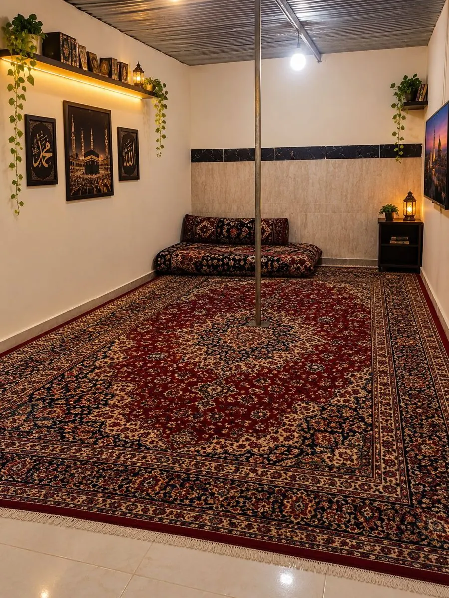
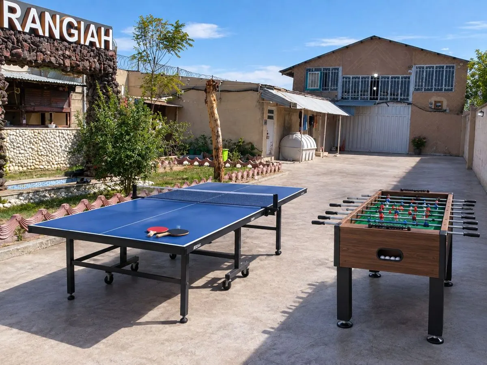
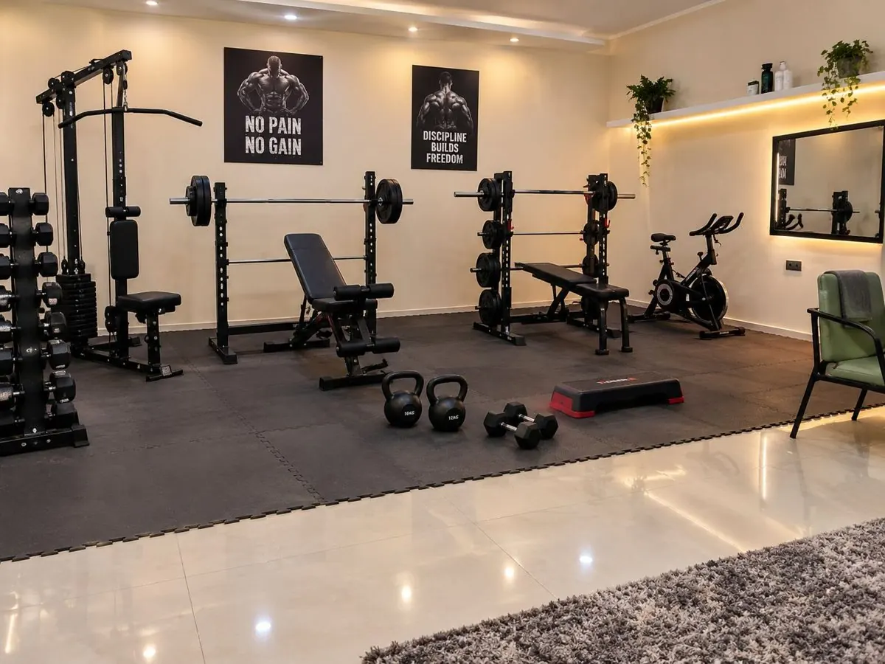

🌿
🚬ترک انواع مواد مخدر
سم زدایی و ترک انواع مخدر و روانگردان از جمله : شیشه، تریاک، متادون، ماری جوانا، کراک، اکستازی و ... در محیطی آرامش بخش.
راهی نو برای زندگی دوباره
تلفن تماس : 09025360606 | مشاوره : 09913100137
مشاوره فوری (رایگان)سم زدایی و ترک انواع مخدر و روانگردان از جمله : شیشه، تریاک، متادون، ماری جوانا، کراک، اکستازی و ... در محیطی آرامش بخش.
روان درمانی بیمار توسط روانپزشک مجرب به همراه جلسات مشاوره خانواده با روانشناس جهت پیشگیری از لغزش مجدد بیماران.
در کمپ خصوصی ترک اعتیاد باران بی کران عشق، از تمام امکانات تفریحی ، اقامتی و آسایشی جهت بازتوانی بیماران استفاده میشود.



کمپ ترک اعتیاد اجباری در حقیقت برای سرویس دهی به افراد و خانواده هایی شکل گرفته است که در شرایط خاص هستند و خواهان درمان و ترک اعتیاد میباشند. نام کمپ اجباری در نگاه اول کمی نگران کننده به نظر میرسد.
ادامه مطلبقبل از هرموضوعی، اعتقاد ما بر این است که فرآیند ترک اعتیاد باید به صورت خودجوش و تمایلی در بیمارن ایجاد شود. اینکه خود بیمار به این نتیجه برسد که نیاز به کمک دارد بسیار ارزشمند است.
ادامه مطلببرای ما، بیمار تمایلی یا اجباری تفاوتی ندارد. وقتی وارد مجموعه میشوند همگی با هم و با شرایط یکسان به گذراندن دوره در کمپ ترک اعتیاد خواهند پرداخت.
ادامه مطلبشرایط پذیرش در کمپ اجباری، تفاوت خاصی با بیماران دیگر ندارد. تنها نکته این است که این نوع پذیرش باید با توافق خانواده و مراجع قضایی صورت گیرد.
ادامه مطلباز مدیریت و کادر زحمتکش کمپ باران بیکران عشق بابت برخورد محترمانه و پیگیریهای دلسوزانه تشکر میکنم. امیدوارم همیشه در مسیر کمک به بهبودی افراد موفق باشند.
محیطی آرام و منظم با کادری دلسوز و مسئولیتپذیر. امیدوارم این مجموعه همچنان به افراد زیادی برای شروع یک زندگی سالم کمک کند.
یکی از مهمترین ویژگیهای این مجموعه، توجه به شرایط روحی افراد و برخورد انسانی با آنهاست. از زحمات تمام پرسنل سپاسگزارم.
ترک اعتیاد مسیر آسانی نیست، اما داشتن حمایت و همراهی درست میتواند این مسیر را هموارتر کند. برای مجموعه باران بیکران عشق آرزوی موفقیت دارم.
از نظم مجموعه، پیگیری مسئولان و رفتار محترمانه پرسنل رضایت داشتم. امیدوارم همیشه در کار ارزشمندشان سربلند باشند.
نام زیبای باران بیکران عشق واقعاً حس امید و شروع دوباره را منتقل میکند. برای تمام کسانی که در این مجموعه برای بهبودی تلاش میکنند آرزوی سلامتی دارم.
مجموعهای که با هدف کمک به انسانها فعالیت میکند، شایسته قدردانی است. از تمام عزیزانی که برای بازگشت افراد به زندگی سالم تلاش میکنند تشکر میکنم.
برخورد خوب، احترام به افراد و تلاش برای ایجاد انگیزه از نکات مثبتی است که در چنین مجموعهای اهمیت زیادی دارد. خسته نباشید به تیم باران بیکران عشق.